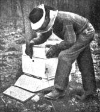

Our Little Sugar Factory
What you need to know about bees and having your own little sugar factory, from the Have-More Plan.
By the Mother Earth News editors
March/April 1970
WE didn't decide to have bees until we had laying hens, chickens to eat, goats, pigs, and, of course, our garden all producing.
As I look back I believe it was my father who got us interested in the idea of keeping bees. Actually, he didn't know anything about bee-keeping, but every time he visited us he brought along a jar of honey. He liked honey so much and believed it so much more healthful than sugar, he got us interested in producing our own.
Parts of a Modern Beehive
We've found out that doctors do recognize that honey is the perfect sweet - it's easier to digest, furnishes a quick source of energy, and, unlike sugar, contains minerals.
Also about this time we were reading a book called The Farm Primer in which the author says that a hive or two of bees will increase the fruit yield by 30 percent and even make the fruit taste better. Moreover, he pointed out that a hive of bees requires only 8 hours of care per year and gives about 75 pounds of honey. Seventy-five pounds per hive seemed a lot but I've since heard of single hives producing as high as 500 pounds. Of course, it's unlikely a novice will get as much as that.
One lunch hour in New York, I went down to a bee equipment place. All I meant to do was buy a booklet called "Starting Right with Bees" I was going to read first - and get the bees later. I asked them how much the equipment necessary to have one bee hive would cost. They said, "About $20 - including a queen and three pounds of bees - but right now we have only one complete amateur outfit left."
It seems they were having trouble getting zinc to make bee smokers. This is no longer true. Obviously, if I were going to have bees, then I'd best sign up for them right then and there. So I made out a check for the works.
Incidentally, somewhat later on in talking to Mr. C. C. Whitehead, one of the best amateur bee-keepers in Connecticut, I found it was his opinion that the only way to learn about bees is to get up your courage and order a complete beginner's outfit ,as I did and then you'll just have to learn or else -
One of the nice things about bees is that if you sign up for a beginner's outfit in January to March, you'll learn a good deal before the bees arrive.
That's because your outfit arrives in two shipments. The first shipment is equipment - later, sometime in April, depending on the weather, the queen and three pounds of bees - about 15,000 of them - arrive.
In the first shipment, you get a smoker, bee feeder, hive tool, bee veil, a booklet of directions, a year's subscription to a bee magazine, wax foundation; plus a hive, a deep super and two shallow supers, knockdown.
We spent about three evenings assembling the bee hive and supers - unassembled, 200 odd pieces look like a jig-saw puzzle. Each piece is so perfectly cut, it's fun putting them together.
The hive is simply a box-like structure. At the bottom is a stand with an alighting platform. Set on top of this is the bottom of the hive- 3 or 4 boards cleated together to make a floor. Upon this rests a large oblong box without top or bottom. This is called the hive body or brood chamber. In it are hung ten wooden frames each one holding a patterned sheet of wax. The bees draw these sheets of wax into cells. In the cells the young bees are hatched.
On top of this large box you eventually place a shallow box, maybe two or three. These are called supers and like the hive body each hold ten frames. The honey stored by the bees in the hive body must be left with the bees for winter food. But the honey stored in the supers can be taken away and extracted. A queen excluder is placed between the hive body and the supers to keep the queen from laying eggs in the supers. On top of the super - or supers - for they may be piled one on top of the other - is an inside cover. Then over all is the tin-topped wooden cover which telescopes down over inner cover and top super to make the hive waterproof.
All the above - hive, supers, bottom, inner cover, frames and sheets of wax are sent you in pieces - and you put them together. Very complete directions (printed in about seven languages for a bee hive is standard throughout the world) are provided. We had a little difficulty putting the hive together because our playful kitten chewed up the directions, but we still made out all right.
By the time you get the hive together and painted, you'll understand a little something about the art of bee - keeping. You'll also have a chance to study up on what to do when the bees arrive.
Let me tell you, you'll get a real thrill when you come home some day and find the second part of your order -a screened box about a foot square crammed full of 15,000 buzzing bees.
I'd read that anyone can handle bees - if they do it properly - and not get stung. But I'll admit I had my doubts the evening Carolyn took me into the garage, pointed to the cage of buzzing bees the expressman had brought and said, "Well, do you want to put the bees in the hive now or after supperremember, that's your department!"
I confess I postponed putting the bees into the hives until after supper. I also sneaked upstairs for a last reading of the chapter "How to Install Bees in a Hive".
Well, after supper I set up the hive and carried the caged bees out to the uncovered hive. I wore the bee-veil, but no gloves. It wasn't that I was being brave, I just couldn't find a pair of leather ones.
In opening the cage, I spilled the syrup can that goes along with the bees - spilled it all over my hand and about 3,000 bees tumbled out after it. Before I knew it my hand was covered with crawling bees. For about ten seconds I stood perfectly still. Then, suddenly I realized I was not being stung!
The bees were happily lapping the sugar syrup off my hand - that is, the two or three thousand that could get a lick in. I begain to think again and remembered to put the opened cage inside the hive. Then, somehow, I brushed the bees off my hand into the hive, released the queen, put the cover over the hive, and went to the house.
Mrs. R. had been watching me from the kitchen window. I came in, undid my veil and tossed it onto a chair.
"Didn't you get stung?" she asked. "Of course not - why should I?" I replied, shrugging my shoulders.
Right then and there I did get stung. It seems that one lone bee had crawled from my hand, up my arm, and when I shrugged my shoulders, I pinched her - and she let me have it.
I've dwelt at some length on the way I felt handling bees for the first time because so many people are missing the very real benefits they can have keeping bees because they are afraid of being stung.
All the rest of the year I was stung only twice. Both stings were due to my own carelessness. For example, one day I had been working hard in the garden in the hot sun. In fact, it was so hot that I wore only dungarees. Suddenly, I remembered I should feed the bees some sugar water. I carried it over to the hive, not stopping to put my veil on - or even a shirt. I opened the hive, flipped off the cover, bent over to pick up the Boardman bee feeder and had no sooner straightened up when I was stung by three bees. That was my fault for being so brisk and blowing my hot breath on the bees.
One other time I pinched a bee and she stung me. But by then I'd learned to rub, not pull the stinger out. And by getting the stinger out fast the sting was hardly more than a mosquito bite. With my veil, and gloves and handling the bees properly, I don't get stung.
For quite some time - from the middle of April when the bees arrived until the first honey flow in June - I fed the bees a mixture of sugar and water. This is fed by the bee feeder which holds an inverted Mason jar with its zinc top perforated.
After the clover blossoms, the first real honey flow is on and the bees make their own honey. You'd think it might be smart not to get your bees until the honey flow started so you wouldn't need to feed them sugar-water. But the reverse is true. Although 15,000 bees sound like a lot of bees, they're just the nucleus of the hive. A strong hive builds up to three or four times this size. A few days after your bees arrive, the queen should begin producing eggs - at the rate of 2,000-3,000 a day. These eggs are attended by the 15,000 bees and the eggs begin to hatch 16 to 18 days later. So if you get your bees in April your colony should be built up to a fair size when the first honey flow starts in June.
For the first two or three months after our bees arrived the only help we had was from our books. I well remember one line in a book that proved comforting again and again- "The amateur is apt to err by giving the bees too much attention." So whenever I was in doubt about doing this or that I didn't do it.
This system worked fine until one evening when I arrived on the 6:42, Mrs. R. said, "Well, a phenomenon of nature took place today - "
I didn't like the way she said it. "What do you mean?"
"You guess," she replied.
"Jackie has started to talk."
"No."
"One of the geese laid a golden egg."
"No - your bees have swarmed."
Sure enough, in our back yard way at the top of the highest tree was a huge swarm of bees. My wife said she'd heard them come out of the hive around noon - they sounded like a squadron of high-flying airplanes, and after flying around a bit they'd clustered at the top of the tree.
It so happened that very morning a fellow commuter had told me about a neighbor of his, a Mr. Whitehead, who was an expert bee-keeper. All I knew about swarming was that bees don't usually stay around long after they swarm - sometimes only a half-hour. So I telephoned Mr. Whitehead.
Mr. Whitehead calmed me down - told me he'd lend me another hive. Then said that I should take a ladder, climb the tree, cut the branch on which the bees clustered, take it down and hang the bees on a clothes-line overnight. All this I did - incidentally without getting stung. The cluster was a foot in diameter and three feet long.
The next morning I got up at 5:30 A.M., spread a sheet on the ground in front of the newly set up hive, shook the bees off the branch and watched them stream into the new hive. Two hours later the last of them were marching into the hive and I now had two hives of bees, for there was quite a colony still left in my original hive.
Right here I'd like to say that Mr. Whitehead has since taught me a lot about bees. Incidentally, one of the real pleasures of bee-keeping is get - acquainted with other folks who keep bees - they are a fine bunch of people.
If you're really interested in starting in with bees, visit a beekeeper in your locality - tell him you're thinking of getting a hive of bees and see if he won't invite you over to his place to watch him open his hives. If you can, spend a few hours with a beekeeper and if you will read First Lessons in Beekeeping you should get along fine.
It wasn't until some time after we got our bees that we found out that we could not expect much honey from them the first year particularly because we let them swarm. The reason for this is simply that the bees have all they can do to draw the wax foundation into cells plus raising the young bees and storing enough honey for themselves. Our bees had stored up over 60 pounds of honey their first year which we left them to eat over the winter. We took only four or five pounds for our own use. The second year we had about 60 pounds of honey for our own use.
Bees are one of the most fascinating things you can have. They require only a few feet of space, gather their own food, and need only 8 hours care per hive a year. You can have bees even if you live in the city. I know of a beekeeper who lives in Brooklyn.
Suggested Reading:
First Lessons in Beekeeping, $1.00
|
 Pointing to the top entrance. In late years this second entrance, especially in the north, has demonstrated its advantages. It saves the bees from death in case bottom entrance gets clogged with snow or dead leaves. Also provides better ventilation. |
 At first Carolyn would have no part of the bees. Later, she learned you can handle bees without getting stung. Note ""frame"" of honey. |
 A honey ""extractor"" is used to whirl the honey out of the comb. Jackie and his friend were glad to sample each batch. |